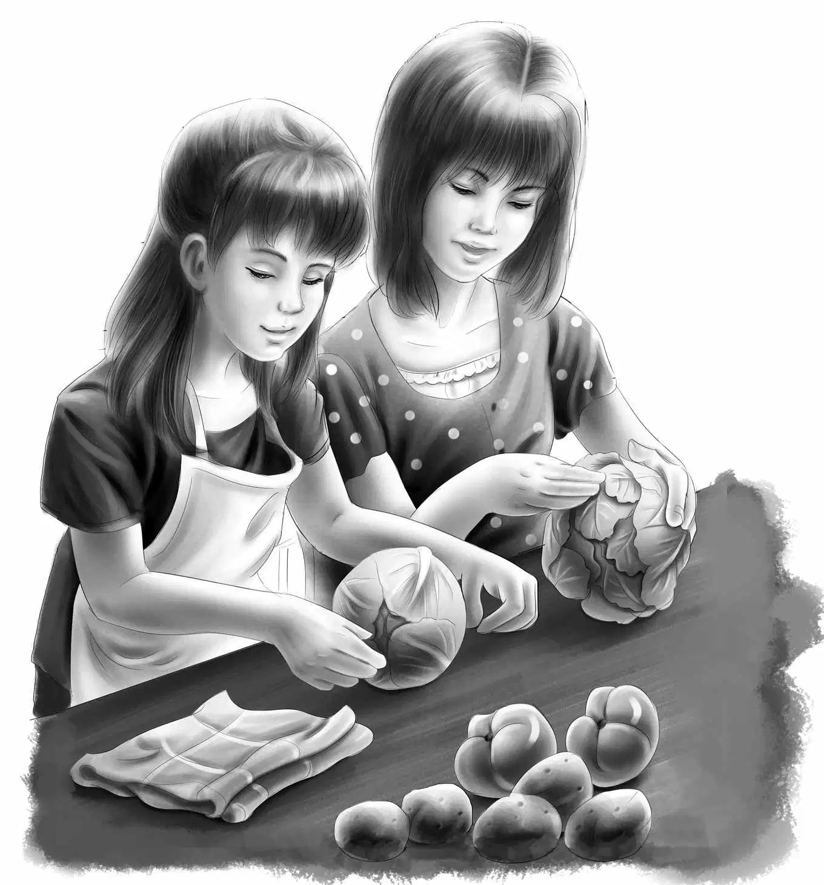
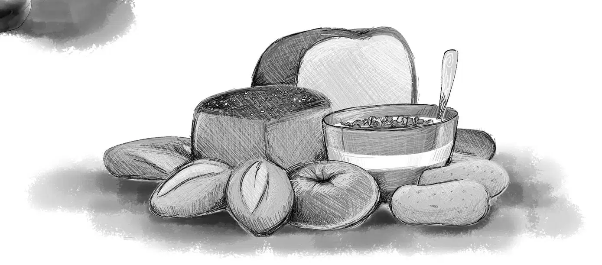
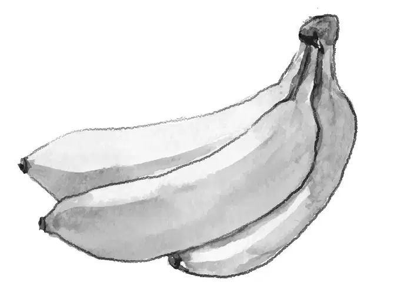
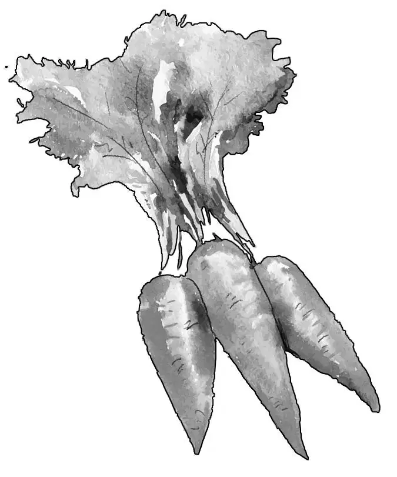
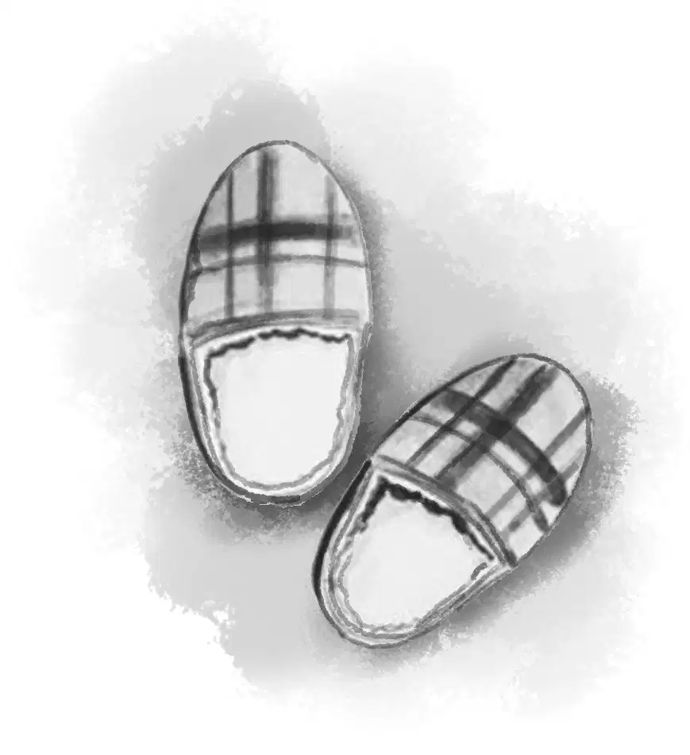
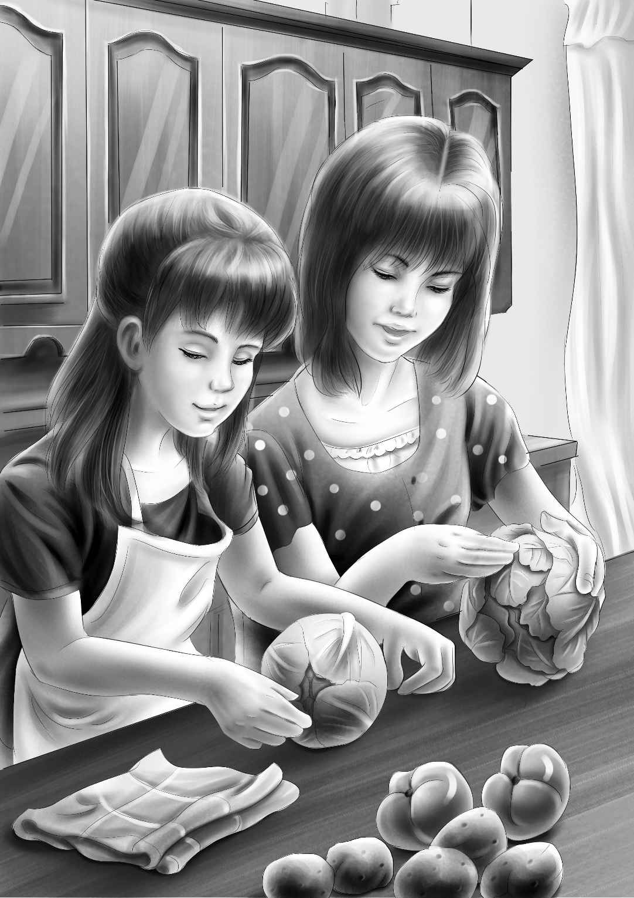
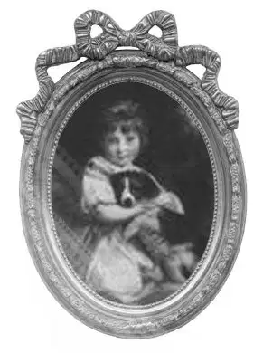

The sun was shining, and it was a beautiful morning. It was not too warm and not too cold.
“Remember how we came along this way in the station wagon when we were going on the houseboat?” Henry asked.
“That’s right,” Benny said. “What was the name of the first place where we stopped?”
“Wasn’t it called Second Landing?” Violet asked. “I remember there was a store there.”
“Let’s stop again!” Benny said. “Maybe the man in the store will remember us.”
“We can buy some things for lunch,” Jessie said.
The Aldens liked the smooth country road. There were trees and bushes on both sides.
When they had ridden about ten miles, Benny said, “I think I see a railroad crossing. Maybe we are coming to a town.”
When they were closer,Benny called out, “Yes, it’s Second Landing. I remember it.”
“And there is Mr. Martin’s store,” said Henry.“We bought groceries there for the houseboat.”
The Aldens leaned their bicycles against the side of the little store. They went inside.
Right away they heard a woman’s voice saying, “Oh, Mr. Martin, I’m so upset.”
“I’m sorry, Mrs. Randall,” said Mr. Martin. “I’d like to help you. Tell me about it.” He nodded at the Aldens. “Be with you in a minute.”
The children saw that Mrs. Randall was a pretty woman with curly brown hair.She was small, and she certainly was upset.
She said, “My husband is bringing his boss, Mr. Evans, home to supper. And I just got Carl off to camp, and the house is a mess. Now I have to get a special dinner and clean up the house and yard. And I have to do it alone.”
Jessie went over to the counter. “Excuse me,” she said. “We couldn’t help hearing.”
The woman turned around and saw the four young people.
Jessie said, “We’d like to help you out. We are just taking a bicycle trip. Violet and I would love to do your housework, and Henry and Benny could do your yard.”
“That’s right,” Henry added. “We have plenty of time. We’ll be glad to help you.”
Mrs. Randall stood with her mouth open in surprise. Then she exclaimed, “How kind you are! I’m a perfect stranger. I could never let you do this.”
“Oh, yes you could,” said Benny. “Just try.”
“Now you have some good help,”said Mr. Martin. “I’ve met these Aldens and you can trust them.”
“We are looking for an adventure, anyway,” said Benny.
Mr. Martin laughed. “It looks like a lot of hard work to me.”

“If you really mean it—” began Mrs. Randall.
“Of course we mean it,” said Benny. “And here we stand, wasting time.”
“All right!” said Mrs. Randall. “I’ll do it! I’m buying things for a boiled dinner.”
Violet said, “That’s good. That is the dinner my grandfather likes best.”
Mr.Martin was already putting things in bags.
“Give them to me,” Henry said. “We’ll carry the bags on our bikes.”
“Oh, you don’t need bikes,” said Mrs. Randall. “I live just around the corner.”
Benny said, “We have to take our bikes anyway.We might as well take the groceries, too.”
They rode along slowly, and Mrs. Randall walked. “Right here,” she said, pointing. The boys saw that the grass needed cutting. She opened the door.
Mrs.Randall led the way into the kitchen, saying, “It was awfully good of you to come. Have you had lunch?”
“No,” answered Benny, “and I am starving!”
Mrs. Randall laughed and said, “You make me think of my son Carl. He’s always hungry.”
She stopped smiling suddenly and looked worried.
“That’s funny,”the Aldens thought.“Her troubles should be over.”
“Why is she worrying when there are four people to help her?” wondered Jessie.
Then Jessie took peanut butter and bread out of the bag and began to make sandwiches. Mrs. Randall said, “If I can’t make sandwiches for you, I can give you milk and bananas.”

Henry set four chairs at the kitchen table. As Mrs. Randall watched them eat, she said, “I can’t believe you are going to help. It seems like a dream.”
“I’m no dream,” said Benny. “Just touch me.”They all laughed, and everyone felt better.
When lunch was over, the girls began to wash the breakfast and lunch dishes. The boys went out into the yard.
“You’ll find rakes and things in the garage,” Mrs. Randall called after them. “Don’t touch the—” She stopped. “But then you wouldn’t anyway.”
Henry and Benny looked at each other. “Now what do you make of that?” Benny asked. “I feel that something is still wrong, but I can’t think what.”
“Neither can I,” said Henry. “Of course, we are strangers. Maybe we will find out later.”
Then all was quiet for awhile except for the noise of the dishes and the lawnmower. Mrs. Randall went upstairs to make the beds. She had left all the things to make a boiled dinner. Corned beef,cabbage, carrots, and turnips lay on the table.

Jessie and Violet began to peel the vegetables. Then they put everything into a big kettle. Later they would add the potatoes.
Mrs. Randall came downstairs.She said, “This has to boil slowly for a long time.”
“But then your whole dinner is done,”said Jessie.
“Except for a pie,” Violet said. “Mrs. Randall, let Jessie make an apple pie for you. I’ll peel the apples.”
“I’m sure any man would like that,” said Mrs. Randall. “I should tell you that my husband sounded nervous this morning when he telephoned me from Boston. He doesn’t have any idea why Mr. Evans wants to see him. He could see him any time in Boston. Perhaps he isn’t doing his work very well.”
Benny came in just in time to hear this. “Then again,” he said, “maybe Mr. Evans is going to give your husband a better job and more money.”
Mrs. Randall laughed. “That could be. But why does Mr. Evans want to visit us in our home?”
“There must be some reason,” Jessie said. “I guess we’ll have to wait and see.”
Mrs. Randall went into the dining room to dust. Suddenly Violet noticed that she was sitting down at the table with her head on her hand.
“Are you all right?” she asked anxiously.
Mrs.Randall jumped up and said brightly, “Oh, yes, I was just resting.”
But Violet thought,“She is still worrying about something.”
Later, the girls helped Mrs. Randall get ready for company. Violet said, “This must be your boy’s slipper.” She held up an old green slipper, ripped along one side. “I found it behind the sofa.”
“Yes, it’s Carl’s,” Mrs. Randall said. “I’m afraid he isn’t very neat.”
“Like most boys,” said Jessie, laughing.

Mrs. Randall laughed, too, but she soon looked sad again. Violet thought to herself, “Something is wrong. I’m sure it has something to do with Carl.”
When the table was set, Mrs. Randall said, “The men will come on the six o’clock train. I’ll go upstairs and change my dress.”
But the Aldens could hear her saying to herself, “Oh, dear! Oh, dear me!” They looked at each other.
“Still worrying,” Jessie said to Henry.
At six o’clock, Benny said, “Hear that whistle? The train has come in.”
The Aldens knew that the station was not far away. Mr. Randall and Mr. Evans could walk to the house very easily. Sure enough, the men soon appeared on the front walk.
Mrs. Randall met them at the door and shook hands with Mr. Evans. “How do you do?” she said. “I’m so glad you could come, Mr. Evans.”
“I’m glad to be here,” Mr. Evans said and looked at Mrs. Randall with a smile. Her curly hair was smooth, and her blue linen dress was very becoming.
“Come in and sit down,” Mrs. Randall said. “I have a surprise for my husband. Four of the nicest young people came along when I was buying groceries. They are taking a bicycle trip, but they offered to help me.”

“You mean strangers?”Mr. Evans asked, smiling to himself.
“Mr. Martin at the store knew them,” Mrs. Randall said. “We weren’t strangers very long. They’re my friends now.” And she introduced the Aldens to Mr. Evans and her husband.
Mr. Evans said,“Can I believe my nose? I smell something I haven’t had for years. A New England boiled dinner!”
“Good!” Mrs. Randall exclaimed. “I’m so glad you like that. And Jessie made us an apple pie. You don’t know what wonderful friends the Aldens have been to me!”
“You are having dinner with us, aren’t you?” Mr. Randall said to the Aldens.
Henry shook his head. “We’d like to, sir, but we think we should be on our way. There’s a motel between here and Ashby. That’s where we plan to stay tonight.”
“I asked them to stay to dinner and overnight,too,” Mrs. Randall said. “But they wouldn’t. Maybe you’ll stop on your way back?”
Jessie smiled. “That’s right. Maybe we will. We have had such a good time with you.”
Mr. Evans said, “I’m sorry you young people can’t stay. I’m sure you are all wondering why I came. I was going to tell the Randalls later, but if you are going, I’ll tell it now. It has a lot to do with the Aldens.”
Everyone looked puzzled. Mr. Evans had never heard of the Aldens until that very day.
However, Mr. Evans went on. “Mr. Randall is doing an excellent job for me. He is the right man, and he makes friends easily. I want to give him a more important place in the company. But first I had to be sure that his wife also makes friends easily. I see that she does! I hope you will both be happy about moving to Boston.”
Mrs. Randall’s eyes were dancing as she looked at Jessie. She said, “See what you did for me!”

Mr. Randall said, “This is great news! And you never need to worry about my wife. She is more friendly than I am.”
The Aldens shook hands with Mr. and Mrs. Randall and Mr. Evans, and got ready to pedal away. They all waved good-bye.
The riders soon left Second Landing behind them. The wind blowing on their backs seemed to be pushing them along.
Henry looked at his watch. “We have about two hours before it will be dark,” he said.
“Do you think we have to wait until we get to the motel to eat?” Benny asked.
“No, we’ll stop at the first good place we see,” Henry promised. “We’re all hungry.”
As the Aldens rode along, Jessie said, “Oh, I love these country roads. And we’ve already had an adventure for you, Ben.”
“And a real mystery, too,” said Benny. “A mystery about Mrs.Randall and her son Carl. Something was wrong.”
Violet said, “And it had nothing to do with company for supper.”
“Right,” said Jessie.
The Aldens had been riding for half an hour when Henry said, “Look, there’s a restaurant.”
“A good thing, too,”said Benny.“I’m starved.”
An hour later the Aldens had finished dinner and were coming out of the restaurant to get their bikes.
“It looks like rain to me,” said Violet. “Look at those black clouds. We’d better hurry.”
Benny didn’t know it, but he was hurrying toward another adventure on their bicycle trip.